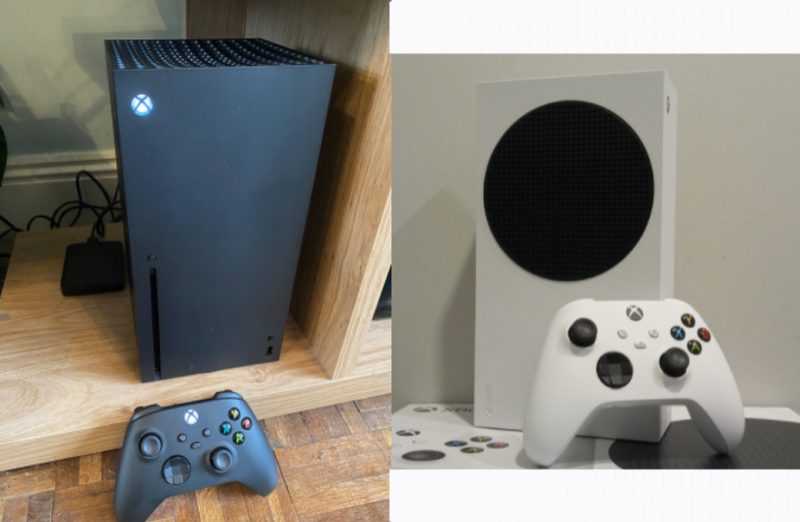

Today's Consoles (2020–Now)
The PlayStation 5 and Xbox Series X|S launched within days of each other in November 2020. Both use super-fast solid-state drives (SSDs), so games load in seconds instead of minutes. Many players now buy games as downloads and play through subscription services instead of buying discs.

PlayStation 5
Released: 2020 | Maker: Sony
The PS5 came in two versions, one with a disc drive and a cheaper Digital Edition without one. Its DualSense controller uses detailed vibration and triggers that can push back against your fingers, so players can feel things like the tension of a bow string. A more powerful PS5 Pro followed in 2024.

Xbox Series X and Series S
Released: 2020 | Maker: Microsoft
Microsoft released two consoles at once: the powerful Series X for 4K gaming and the smaller, cheaper Series S, which plays games only through digital downloads. A feature called Quick Resume lets players switch between several games and pick up exactly where they left off.
The Rise of Game Subscriptions
Both companies now offer subscriptions that work a bit like Netflix for games. Xbox Game Pass gives players access to a large library of games for a monthly fee, and PlayStation Plus offers a similar catalog that includes classic PlayStation games. For many players, these services have changed how they discover and play new games.
PlayStation 5 photo by Osh33m, licensed under CC BY-SA 4.0 (resized). Xbox Series X and S photo by Ian Hughes (Series X) and AsmodeanUnderscore (Series S), licensed under CC BY-SA 4.0 (resized). Both photos from Wikimedia Commons.
Next stop: the Contact page to share your favorite console.